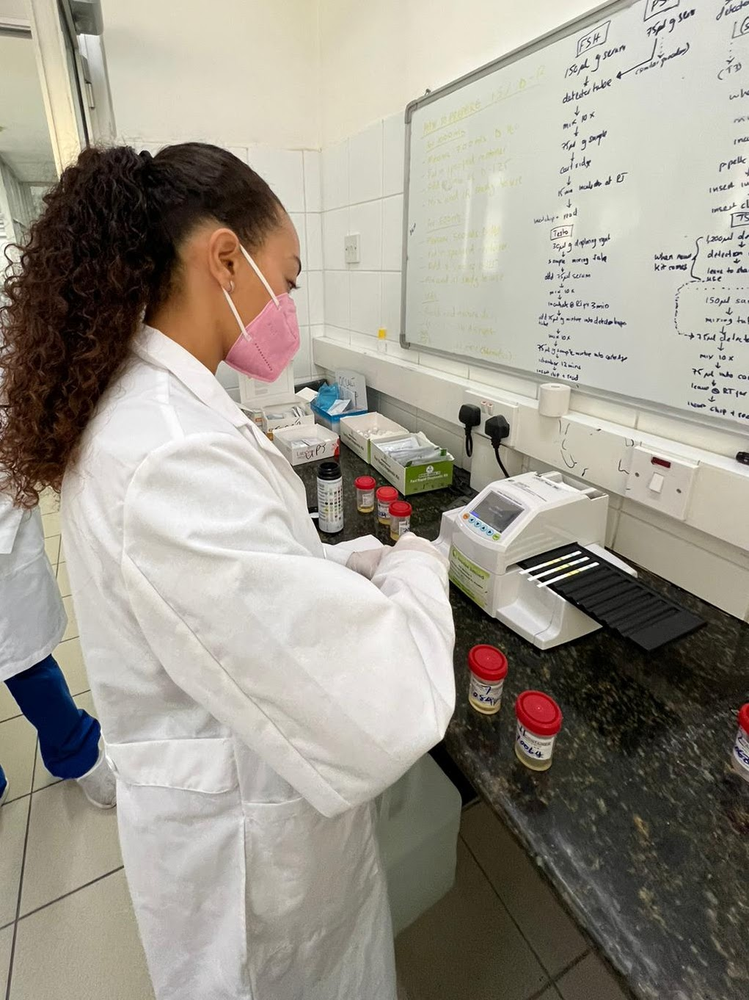
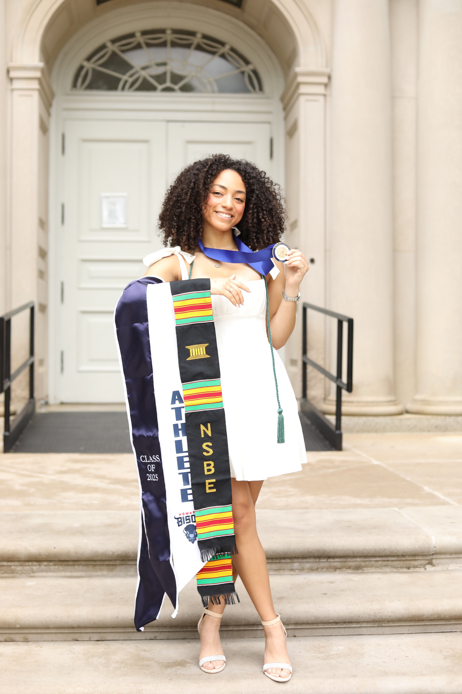

Comfortable moving between wet-lab workflows, imaging questions, data structures, and plain-language scientific communication.
makenna rodriguez
B.S. Honors Biology · Howard University grad '25 · now a
Neurodegenerative Computational Fellow at the NIH (NINDS).
brain volumes / data systems / tiny portals of curiosity

NEUROSCIENCE
DATA SCIENCE
NIH FELLOW
HOWARD UNIV.
PYTHON + R
STUDENT ATHLETE
ZINE MODE
NEUROSCIENCE
DATA SCIENCE
NIH FELLOW
HOWARD UNIV.
PYTHON + R
STUDENT ATHLETE
ZINE MODE
NEUROSCIENCE
DATA SCIENCE
NIH FELLOW
HOWARD UNIV.
PYTHON + R
STUDENT ATHLETE
ZINE MODE
NEUROSCIENCE
DATA SCIENCE
NIH FELLOW
HOWARD UNIV.
PYTHON + R
STUDENT ATHLETE
ZINE MODE
recent snapshots


choose a portal
A faster way through the site for faculty, mentors, and collaborators.
01
Profile
Honors Biology, computation, leadership, languages, and the human side of the work.
02 Research TimelineNIH/NINDS, neuroimaging, biotechnology R&D, clinical exposure, and data science.
03 Posters + TalksPosters, thesis work, data presentations, and scientific communication artifacts.
04 GitHub ProjectsBrain-health search tools, neuroeducation games, and this living portfolio build.
hi, i'm kenny
I recently graduated from Howard University with a B.S. in Honors Biology (minors in Chemistry & Computer Science, GPA 3.77). I'm now a Neurodegenerative Computational Fellow at the National Institute of Neurological Disorders and Stroke (NIH · NINDS), where I work at the intersection of neuroscience, imaging and code.
Off the bench I'm a former Division I women's golfer, a skateboarder, and a forever student of nature — happiest somewhere between a lab bench, a board, and a mossy idea that will not leave me alone.
HONORS BIOLOGY
CHEM + CS MINOR
DEAN'S LIST · ALL SEMS
NEC HONOR ROLL
D1 GOLF
Research fit snapshot
questions I keep circling
- How can quantitative imaging biomarkers make neurodegenerative disease trajectories easier to measure?
- How can high-dimensional cell-state atlases translate into more interpretable models of disease and perturbation?
- How can open, accessible research tools improve trust, inclusion, and science communication in brain health?
Draws from neurodegeneration, molecular dysmorphology, stem-cell R&D, neural engineering, and health-data projects.
Brings coordination, mentorship, athlete discipline, and inclusive communication into research spaces without making the work about ego.
leadership
National Society of Black Engineers — Membership Chair
Women's Golf Team — Representative & Board Member
College of Arts & Sciences Honors Association
The Women's Network
Skate Club — Executive Board
NAACP
Student-Athlete Advisory Committee
things i've done
Managing Coordinator
National Black Nonprofit Alliance (NBNA)
Manage the HBCU micro-internship pipeline for SSS/NBNA via Parker Dewey — coordinating applicant onboarding, IBM SkillsBuild credential tracking, and intern data systems across the Upper East Coast / DMV region. Support organizational operations through outreach coordination, intake template development, and AI tool integration (ChatGPT, Notebook LM) in service of NBNA's national social franchise and equity-building mission.
Neurodegenerative Computational Fellow
NIH — NINDS
Hands-on neuroscience research: experimental design, data analysis, and interpretation. Engaged in mentorship and training opportunities focused on advancing careers in neuroscience research.
Jewish Changemakers Summer Fellow
Jewish Changemakers
Selected fellow in a national leadership program engaging emerging changemakers across professional development, identity, and civic action.
NSF STAIR Intern
Pennsylvania State University
Developed understanding of research administration — budgeting, compliance, and career pathways — through mentorship, live sessions, and collaboration with research administrators and faculty.
READ NSF STAIR FEATUREPre-PhD Scholars Program — Neural Engineer
University of Pittsburgh
Evaluated copper, silver paint, and conductive adhesives in micro-invasive neural probes to optimize conductivity, durability, and fabrication for chronic recording applications.
READ FINAL REPORTThesis Researcher — Molecular Dysmorphology
National Institutes of Health
Developed a volumetric quantitative biomarker to measure brain volume outcome for Ceroid Lipofuscinosis Neuronal Type III — Batten Disease.
Stem Cell Biologist Intern
Thermo Fisher Scientific R&D
Tested cryopreservation efficiency across multiple cryodensities, integrating thaw and 3D spheroid growth protocols through independent experimentation.
SALE Program Member
Deloitte
Assessed how skills as a collegiate athlete transfer to the professional workplace; workshops on interviewing, personal brand, and community service.
Quantitative Methods Workshop Representative
MIT × NSF
Completed intensive, invitation-only workshop on quantitative tools and Python for data analysis in biology and neuroscience, hosted by the MIT Department of Biology.
Black in Cancer Mentee
Black in Cancer
Paired with an experienced cancer researcher for career planning and navigating post-undergraduate opportunities. Built a structured roadmap of short- and long-term goals.
Data Engineer — Bridges to Healthcare Tech
UnitedHealth Group × CMU
Seminars on advanced healthcare analytics and data engineering. Presented 'Examining Premature Death at the County Level: The Role of Alcohol, Income, and Education' to Optum leadership.
VIEW PRESENTATIONClinical Researcher — Future Docs Abroad
Shree Hindu Mandal Hospital
Shadowed clinical rotations and worked in an anatomy lab; immersed in the traditions, customs, and languages of Tanzanian culture.
thesis, posters & talks
Examining Premature Death at the County Level
Data-engineering capstone exploring the role of alcohol, income, and education in premature death at the county level — presented to Optum leadership at the Bridges to Healthcare Technology program.
VIEW PRESENTATIONEthics & Bias in Data Science
Invited speaker at the Data Science Symposium addressing ethical considerations and bias mitigation strategies in modern data science pipelines.
Experimental Procedure and Results
Slide deck from the Thermo Fisher Scientific summer research project covering experimental procedure, results, cryopreservation efficiency, thaw protocols, and 3D spheroid growth workflows.
VIEW SLIDESsdAb-Based DNA Immunostaining for High-Throughput Multiplexed Imaging
First-author poster (with Mathieu Perez & Michael Ward) presenting a single-domain antibody + DNA branch amplification platform for multiplexed fluorescence imaging — enabling high-dimensional cell-state atlases and quantitative analysis of cellular responses to perturbation.
single-domain antibodies
DNA amplification
multiplexed imaging
cell-state atlases
OPEN FULL POSTER
Volumetric Biomarker for CLN3 — Batten Disease
Thesis developing a volumetric quantitative biomarker to measure brain volume outcomes for Ceroid Lipofuscinosis Neuronal Type III (Batten Disease), in collaboration with the NIH Molecular Dysmorphology lab.
READ THESIScode garden
Public builds from GitHub: research tools, neuroeducation prototypes, and this portfolio.
GitHub profile
VIEW GITHUB PROFILE
siamakenna
I use GitHub as a working sketchbook for computational biology, public-facing research tools, and interactive science communication projects.
kennysinfodump
This evolving portfolio repository: a zine/Y2K research profile built for LinkedIn, GitHub Pages, and a living research portfolio.
VIEW REPOCommonAxon
Health equity research search prototype for brain-health papers, clinical trials, resources, and reflective research notes.
VIEW REPO LIVE DEMOSoft Recall Game
A quiet point-and-click neuroeducation game prototype about memory, routine, and care.
VIEW REPOGardenByte
A garden-coded creative build space where cozy interface experiments can grow beside science and data projects.
VIEW REPOsome shiny things
Clark Atlanta University
NAFPMS
AACYGF
my toolkit
languages + access
Native: English
Working proficiency:
Spanish, Hebrew, American Sign Language
Useful for patient-aware, community-aware, and cross-cultural research spaces.
code + data
R
PYTHON
MATLAB
SQL
UNIX
JAVA
DATA ENGINEERING
HEALTHCARE ANALYTICS
molecular + cellular
IMMUNOFLUORESCENCE
3D SPHEROIDS
CRYOPRESERVATION
THAW WORKFLOWS
STEM CELL R&D
MULTIPLEXED IMAGING
neuro + engineering
NEURODEGENERATION
QUANTITATIVE IMAGING
VOLUMETRIC BIOMARKERS
NEURAL PROBES
CONDUCTIVE ADHESIVES
CHRONIC RECORDING
research operations
EXPERIMENTAL DESIGN
DATA INTERPRETATION
COMPLIANCE
BUDGETING
APPLICANT ONBOARDING
AI TOOL INTEGRATION
safety + readiness
LAB SAFETY
BLOODBORNE PATHOGENS
CPR / AED / FIRST AID
STOP THE BLEED
SCIENTIFIC COMMUNICATION
ETHICS + BIAS
let's connect
For research collaboration, mentorship chats, or just to say hi —